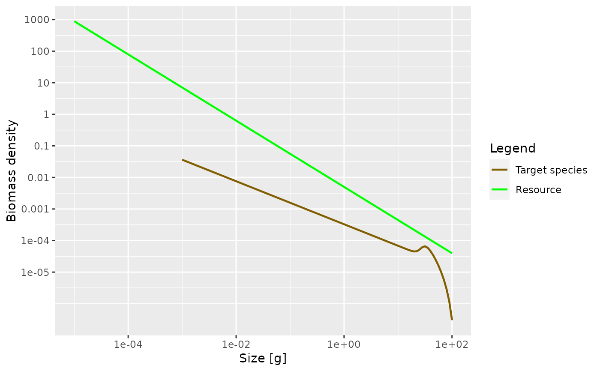

Set up parameters for a single species in a power-law background
Source:R/newSingleSpeciesParams.R
newSingleSpeciesParams.Rd![[Experimental]](figures/lifecycle-experimental.svg)
This functions creates a MizerParams object with a single
species. This species is embedded in a fixed power-law community spectrum
$$N_c(w) = \kappa w^{-\lambda}$$
This community provides the food income for the species. Cannibalism is
switched off. The predation mortality arises only from the predators in the
power-law community and it is assumed that the predators in the community
have the same feeding parameters as the foreground species. The function has
many arguments, all of which have default values.
newSingleSpeciesParams(
species_name = "Target species",
w_inf = 100,
w_min = 0.001,
eta = 10^(-0.6),
w_mat = w_inf * eta,
no_w = log10(w_inf/w_min) * 20 + 1,
n = 3/4,
p = n,
lambda = 2.05,
kappa = 0.005,
alpha = 0.4,
k_vb = 1,
beta = 100,
sigma = 1.3,
f0 = 0.6,
fc = 0.25,
ks = NA,
gamma = NA,
ext_mort_prop = 0,
reproduction_level = 0,
R_factor = deprecated()
)Arguments
- species_name
A string with a name for the species. Will be used in plot legends.
- w_inf
Asymptotic size of species
- w_min
Egg size of species
- eta
Ratio between maturity size
w_matand asymptotic sizew_inf. Default is 10^(-0.6), approximately 1/4. Ignored ifw_matis supplied explicitly.- w_mat
Maturity size of species. Default value is
eta * w_inf.- no_w
The number of size bins in the community spectrum. These bins will be equally spaced on a logarithmic scale. Default value is such that there are 20 bins for each factor of 10 in weight.
- n
Scaling exponent of the maximum intake rate.
- p
Scaling exponent of the standard metabolic rate. By default this is equal to the exponent
n.- lambda
Exponent of the abundance power law.
- kappa
Coefficient in abundance power law.
- alpha
The assimilation efficiency.
- k_vb
The von Bertalanffy growth parameter.
- beta
Preferred predator prey mass ratio.
- sigma
Width of prey size preference.
- f0
Expected average feeding level. Used to set
gamma, the coefficient in the search rate. Ignored ifgammais given explicitly.- fc
Critical feeding level. Used to determine
ksif it is not given explicitly.- ks
Standard metabolism coefficient. If not provided, default will be calculated from critical feeding level argument
fc.- gamma
Volumetric search rate. If not provided, default is determined by
get_gamma_default()using the value off0.- ext_mort_prop
The proportion of the total mortality that comes from external mortality, i.e., from sources not explicitly modelled. A number in the interval [0, 1).
- reproduction_level
A number between 0 an 1 that determines the level of density dependence in reproduction, see
setBevertonHolt().- R_factor
![[Deprecated]](figures/lifecycle-deprecated.svg) Use
Use
reproduction_level = 1 / R_factorinstead.
Value
An object of type MizerParams
Details
In addition to setting up the parameters, this function also sets up an initial condition that is close to steady state, under the assumption of no fishing.
See also
Other functions for setting up models:
newCommunityParams(),
newMultispeciesParams(),
newTraitParams()
Examples
params <- newSingleSpeciesParams()
sim <- project(params, t_max = 5, effort = 0)
plotSpectra(sim)
